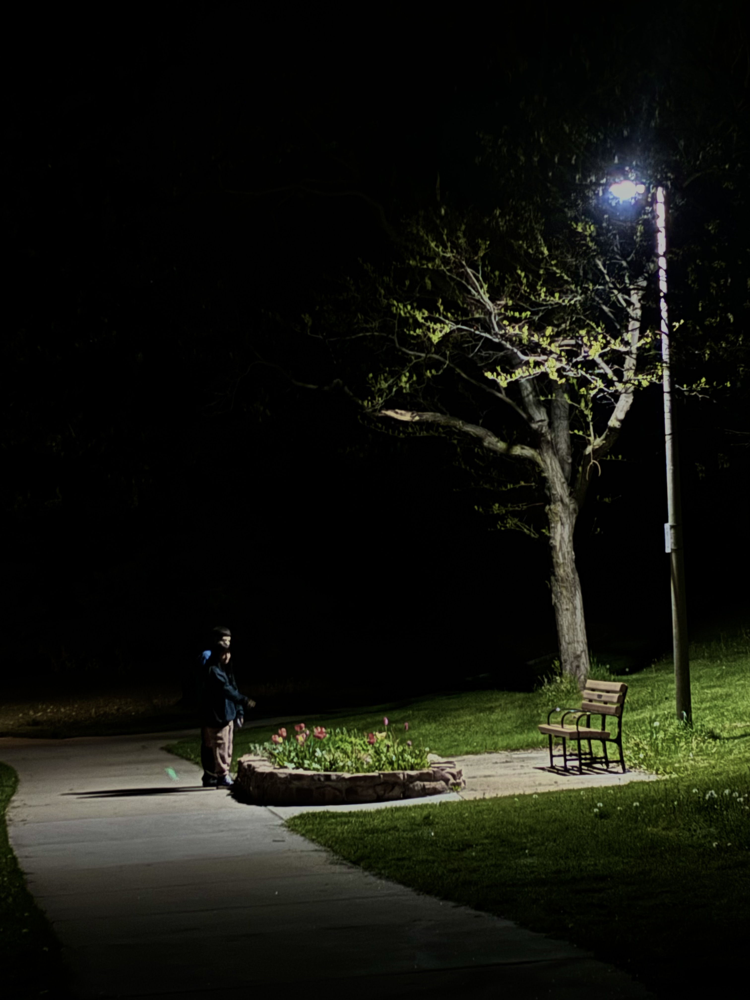
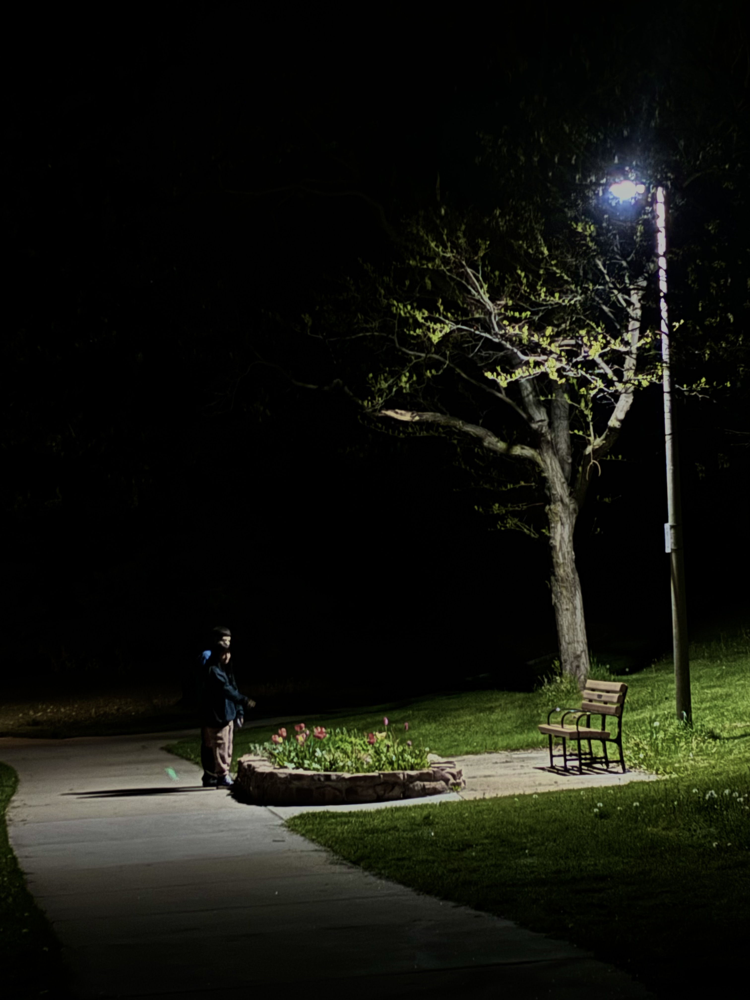

An urban scene featuring an industrial building with a painting of wonder woman. A woman's face in the painting is covered like a mask by a single tree. This image has elements of both Yin and Yang. Wonder woman is a feminine figure yet she is brave and powerful. The trees soften the image while providing a sense of mystery with their placement, while the urban setting makes the environment feel harsher. The sky in the background is bright but cloudy. The contrast between these elements makes the image more interesting to look at.
A bright brick wall with green vines holding vibrant flowers climbing up its side. This image at first glance may appear more feminine but its bright color and lively energy align more with Yang, the masculine element.
This image of a cold dark stone wall on the other hand with its various iron mirrors may seem masculine at first glance, however it's cold and dark energy aligns with the feminine element Yin.
Here we see a bustling local restaurant where friends hug each other and families gather to watch live. The energy is energetic and inviting. Music. In the background is a colorful and lively painting of musicians. This image feels very active and alive and it invites the viewer into the space.
This image clashes with the energy of the previous image. The sign held by a tree in the foreground reads “NO ANYTHING” in bold angry letters. It looks out into a quite secluded forest. It is much less active and inviting than the previous image, but peace, solitude, and boundaries are a necessary aspect of life in order to maintain balance and truely enjoy the vibrant parts of life.
This beautiful vibrant rainbow in a cloudy sky cascades over the University Hill. It's a beauiful reward for getting through the rainfall that interupts a sunny day.
Whether you prefer rain or sun, they are both neccessary to the balance of life, and both bring beauty as well as inconvenience with them.
This picture feels very lonely to me. There is an empty park bench underneath a dramtically barren tree, illuminated by the cold light of the moon. At the same time I find it very comforting. The emptiness is quite and gives space for introspection. Solitude, though uncomfortable at times, helps us connect with ourselves and the world around us better.
Still, nothing lasts forever including moments of solitude. This image is the spring to the winter mood of the last image. Now we see a moment between two friends in an identical location. They are taking in the blooming spring flowers surrounded by bright green grass.